Lost? Try . Hard on the eyes? . Too much clutter? .
I build robots, design mechanical parts, and work on nuclear tooling, ranked in ascending order of paperwork.
B.Eng. Mechatronics Engineering Co-op (Level III), McMaster University
Available for a Spring 2027 co-op.
Featured:
Quadruped robot
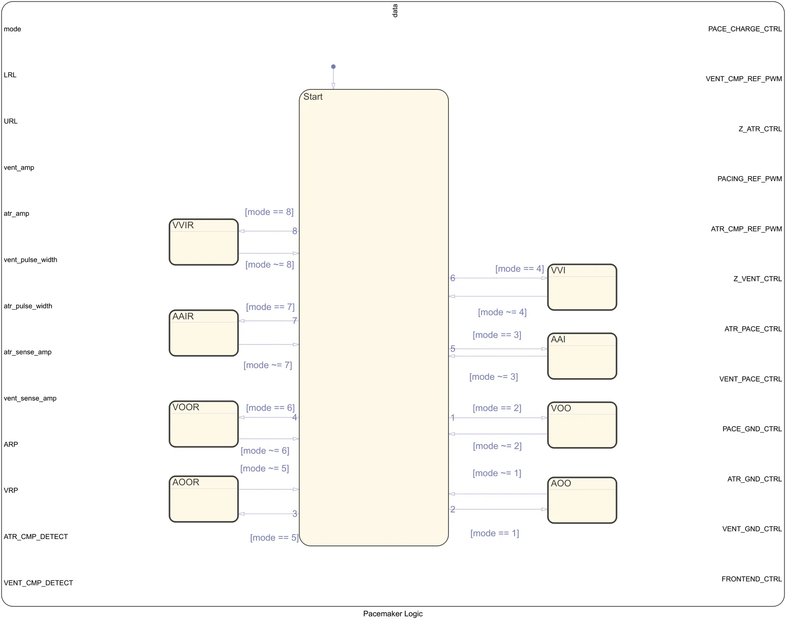
Rate-adaptive pacemaker firmware
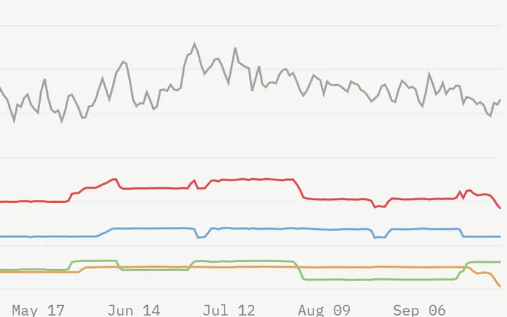
Ontario nuclear grid analysis
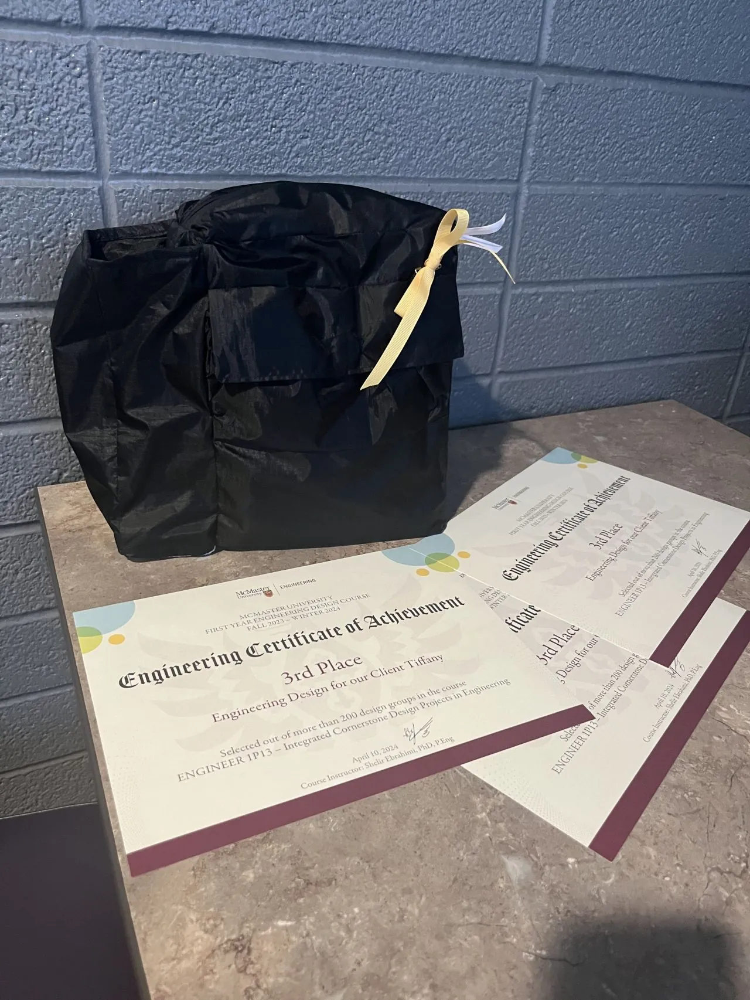
WheelSafe, top 3 of 200+
More:
Projects
Quadruped Robot & Locomotion Sim
A 12-servo, 3D-printable quadruped designed in Fusion 360, exported to URDF and simulated in MuJoCo. A trot gait controller makes it stand, walk and turn in place. The hardware mode (servos through a PCA9685 board on a Raspberry Pi) is written and tested against a fake servo board, but waits for the first build. It walks perfectly in simulation, where friction always behaves.
Pacemaker firmware modelled in Simulink and Stateflow for an NXP FRDM-K64F board, with Embedded Coder generating the C that runs on it. The team model paces in AOO, VOO, AAI and VVI modes. My part was the rate-adaptive modes (AOOR, VOOR, AAIR, VVIR): they read the board's FXOS8700 accelerometer and raise the pacing rate with activity, tuned by threshold, reaction and recovery times.
What happens to Ontario's grid when a reactor goes offline? 11.8 million rows of hourly IESO data in DuckDB, SQL that finds 206 outages of a day or longer, and an interactive dashboard that shows who picks up the slack. Mostly gas and fewer exports. Outage hours line up with prices about $4/MWh higher and about 145 more tonnes of CO2 an hour. Reactor behaviour is next.
SQL (DuckDB), Python, Streamlit, IESO data Live appRepo
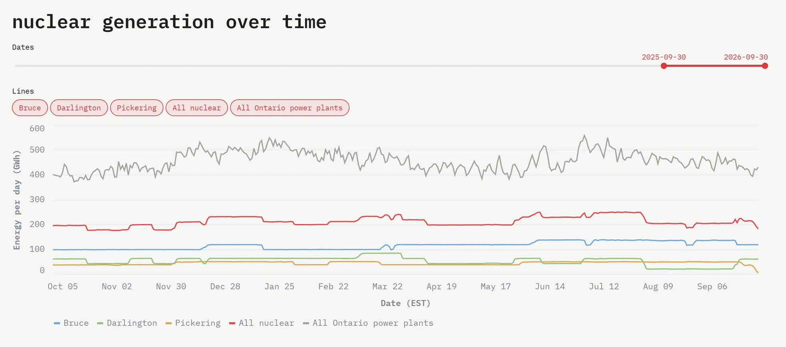
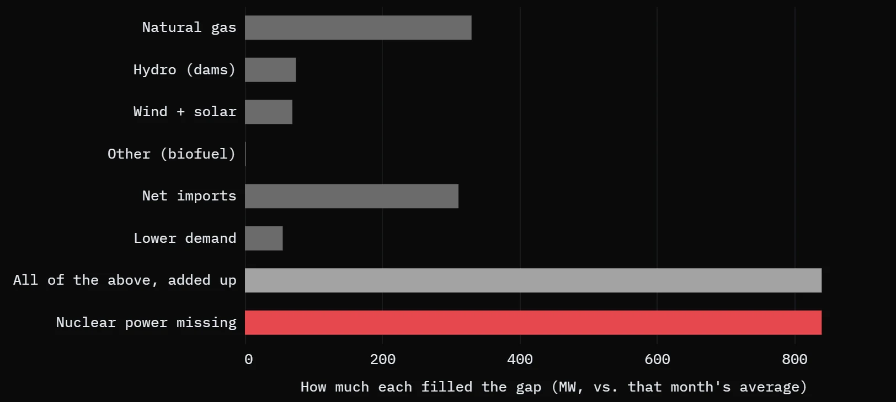
Vision-Guided 2-DOF Robotic Arm
Built in 12 hours, about as long as SolidWorks takes to open. A real-time OpenCV hand-tracking pipeline streams coordinate deltas over UDP to an ESP32, which turns them into smooth stepper motor pulses.
OpenCV, ESP32, C++, UDP
Globe Ghost — iOS GPS Simulator
Sets an iPhone's actual GPS location, not just its IP address like a VPN does, for testing location-aware apps. Includes a live map, scripted routes and a geofence tester.
Updating my résumé got tedious, so I spent far too long automating it. Every Sunday a script checks my repos, an AI agent proposes source-backed edits, and GitHub Actions makes sure it still compiles on one page. I review everything before merging. The repo's private, mostly so nobody watches me reword the same bullet eleven times.
Python, GitHub Actions, LaTeX, Claude Code
WheelSafe Storage
An ergonomic, weatherproof wheelchair storage module designed for a client with spina bifida. The 0.4 kg carbon-fiber-reinforced structure reached a 3.25:1 load-to-weight ratio. Placed top 3 of 200+ teams at the McMaster Design Showcase.
Proof-of-concept double wishbone geometry in SolidWorks for McMaster Chem-E-Car's 2026–2027 season. Nothing is built yet: the point was to work out the kinematics and see how the linkage could control dynamic camber to keep a 500 mL sloshing payload stable over a 33 m run.
SolidWorks, kinematics, vehicle dynamics
Misc
Click any image to enlarge.
Chem-E-Car transmission
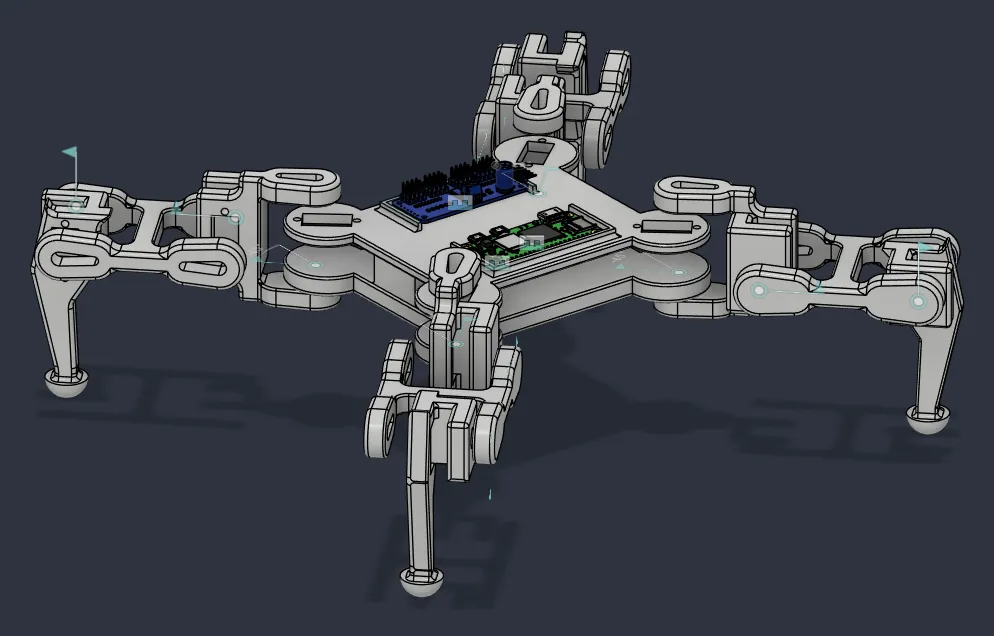
Quadruped assembly
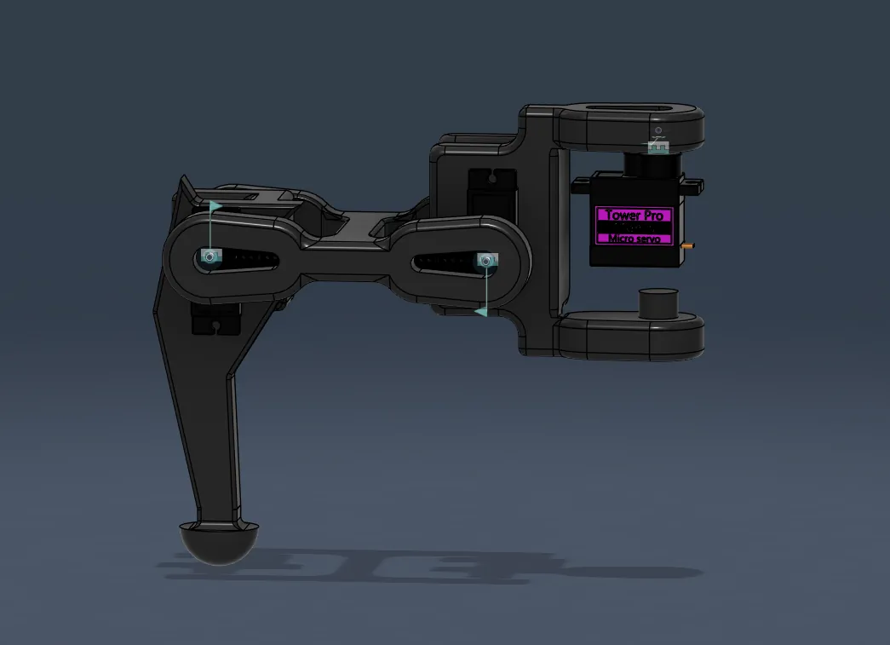
Leg linkageHV discharge test
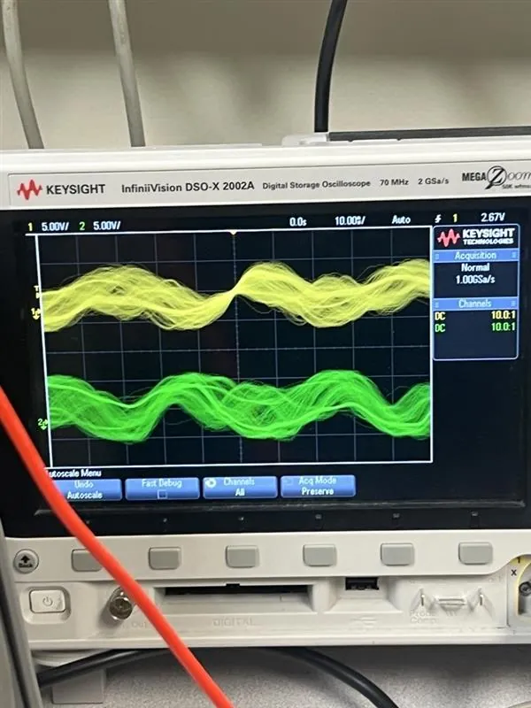
Accidental RF antenna
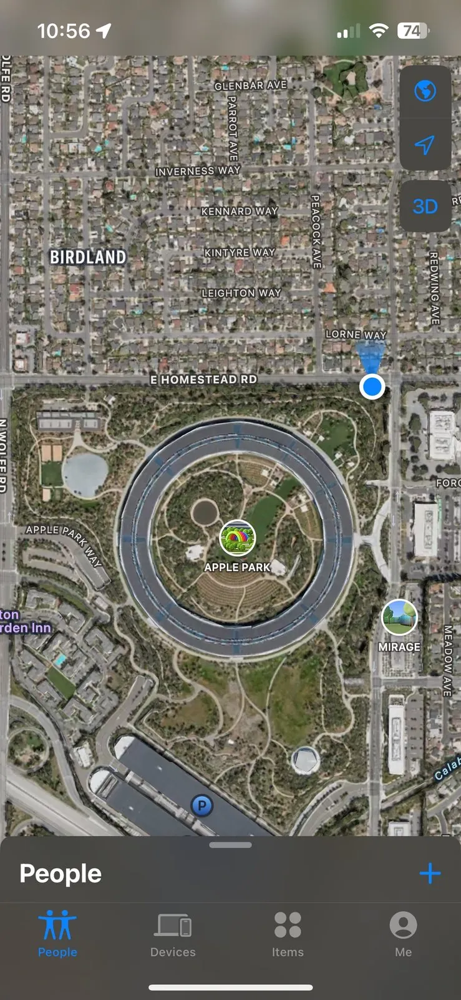
Globe Ghost field test
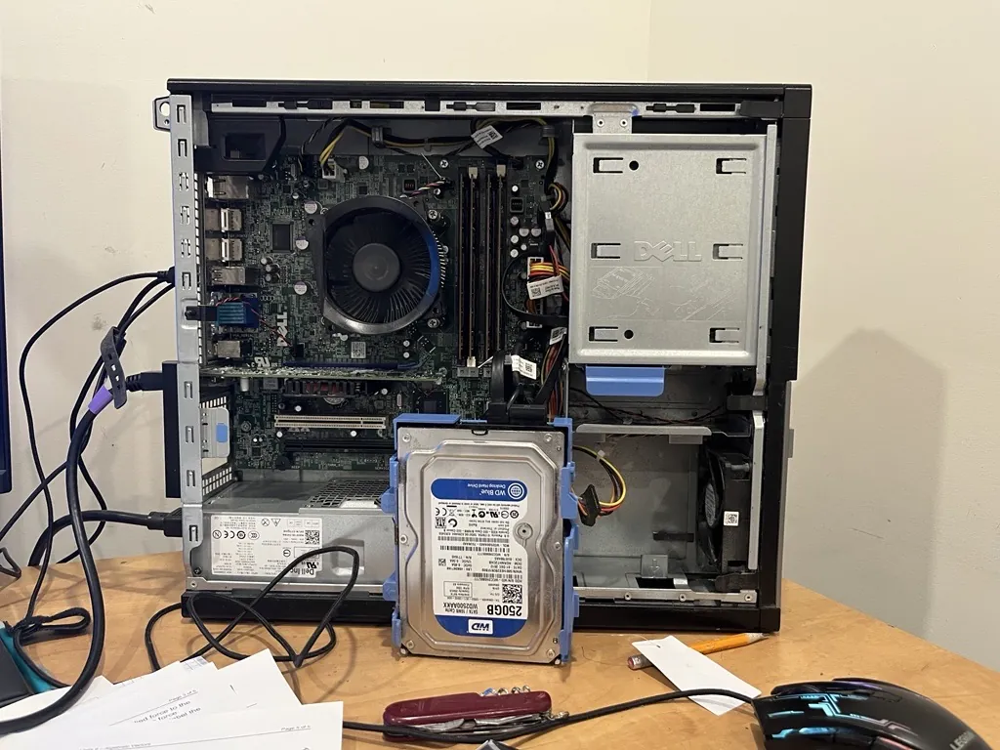
Rebuilt Dell server
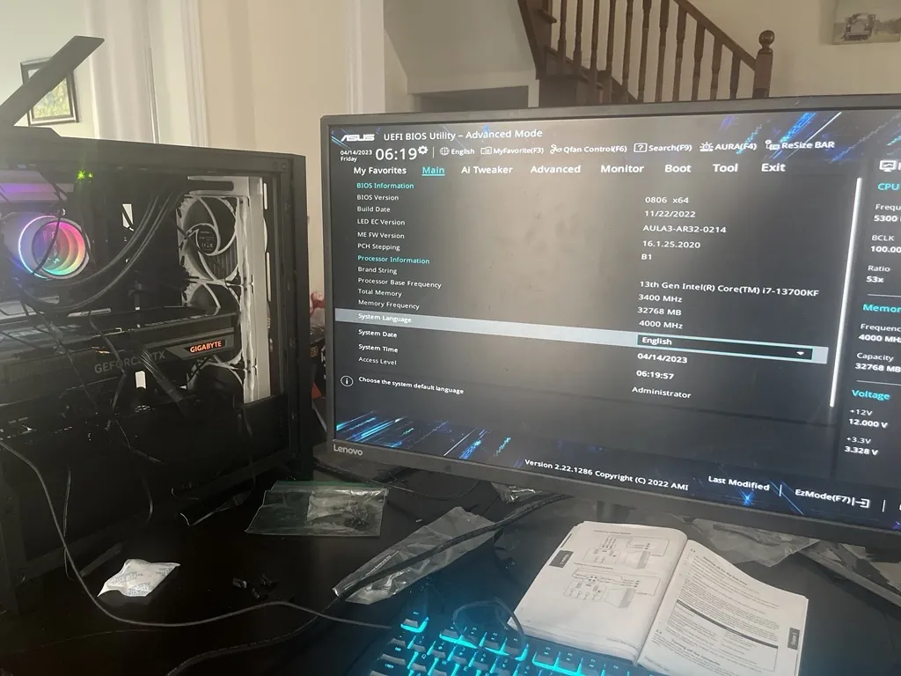
New build, first boot
Experience
Jan 2026 – present
Nuclear Engineering Intern, Eclipse Automation
Tooling design and verification for CANDU sites, including Pickering and international stations. Performed ASD calculations and weldment FEA, wrote FMEAs, and tested CSA N299.2-rated tooling. Built a Power Automate workflow that checks 1,000+ engineering standards, cutting a requirements review from 5 days to 8 hours.
One page, covering nuclear tooling at Eclipse Automation, wheel and suspension design for Chem-E-Car, and projects from an Ontario nuclear grid dashboard to a legged robot and pacemaker firmware.
I'm into all things engineering and technology, but my interests go well beyond that. From woodcarving and cooking to languages, history, and science, I enjoy learning new things and following whatever rabbit hole catches my attention. Lately, that's included jump rope, nunchucks and learning the harmonica.
Art
Painting, drawing, printmaking and carving. Click any piece to enlarge.